-
Introduction
ROHub
[1]
is a research object management platform supporting the preservation and lifecycle management of scientific investigations, research campaigns and operational processes. As the only existing platform implementing natively the full research object model and paradigm, resources associated to a particular experiment are aggregated in a single digital entity (research object), and metadata reliant to understand and interpret the content is represented as semantic annotations that are user and machine readable.
ROHub can support different stakeholders, with the primary focus on scientists, researchers, students and enthusiasts, enabling them to manage and preserve their research work, to share it and make it available for publishing, to collaborate and to discover new knowledge.
However, other user groups can be benefited by ROHub like the Industry that can leverage
the platform to externalize their research to a community of researchers worldwide in multiple scientific domains, e.g., launching campaigns for research on specific topics, and to follow and monitor the progress. Similarly, investors can keep up to date and track scientific advances to fund and get involved in future breakthroughs. As another example, publishers can also leverage ROHub to advertise their journals with researchers, have access to a pool of potential reviewers, and implement more interactive review processes.
-
ROHub portal
ROHub portal is a Web client application providing a comprehensive user interface for the management and preservation of research objects (ROs). ROHub portal integrates and provides access to different research object services, such as:
-
The core RO backend service, enabling the creation, storage, maintenance and access to research objects, the management of their lifecycle, and their preservation. The backend
leverages various EOSC services including Zenodo and B2Share for RO publication, as well as B2Drop for resources storage (ongoing).
-
RO backend also includes a notification service, enabling the subscription to events related to a particular research object (e.g., changes in content or quality), or to the portal itself (e.g., when new ROs are created).
-
The ROHub AIM (Identity and Access Management) service, powered by Keycloack open source solution, and which is integrated with EOSC AIM service (EGI check-in)
-
RO enrichment service (also onboarded in EOSC), which generates automatically semantic annotations based on the (textual) resources aggregated in order to improve the discoverability and searchability of research objects.
-
RO PDF generation service, allowing the retrieval of the RO in paper style in PDF format.
-
EOSC (EGI) Notebooks (under integration) to allow the loading of notebooks aggregated in an RO directly on the EGI notebooks environment.
-
RO checklists service
(under integration)
, providing remote access to the minim-based evaluation of research objects, used to test for completeness,
runnability
or repeatability.
-
RO stability service
(under integration)
, enabling the evaluation of the RO through time by capturing concrete values provided by the checklist service in different moments of its evolution. It allows testing the ability of a research object to achieve its original purpose after being subject
to changes
on its resources.
-
RO stability includes the
RO monitoring tool, providing an interface to visually monitor and keep track of the status of external datasets and web services required for workflow execution. It's based on the stability service.
-
RO collaboration spheres
(under integration)
, providing an interface for the discovery of research objects that are similar or related to the selected research object or scientist.
-
ROHub Portal pages
-
Home
The homepage or landing page provides a general overview of the ROhub platform which includes a keyword search component from which the user can directly start finding research objects and creator information, a section for the featured research object where selective research objects (golden examples) can be featured based on their completeness and impact factor. The landing page also includes a section for the key statistics of the ROHub and a section with the recent activities showing the latest changes or events on the ROHub platform. The figure below depicts the partial view of the homepage of ROhub portal.


Figure xx Landing page of the ROHub platform
-
Basic search by keyword
This component enables users to find research objects by keywords, looking through all the metadata annotations available, e.g., title, description, creator, etc. The user can easily look for research objects or resources by providing any associated keyword and thereafter the user can look for the desired resources from the explore page.

Figure XX: Keyword search component
-
Featured research objects
This section presents the list of ROs that are promoted because of their quality (measured based on the RO compliance according to some specified criteria like completeness, impact etc.) or because of their popularity (e.g., golden examples) as depicted in figure below.

Figure XX Featured research objects component
-
Recent activity
This section presents the latest three ROs that were created most recently, resources added to research objects, snapshots or archives or any recent activities on the ROs. By clicking on the “Read more” the user can go to the main RO overview page for detailed representation.

Figure XX Recent activity component
-
Key Statistics of ROHub platform
This section of the landing page shows the key statistics of the ROHub platform consisting of the number of research objects created with all the resources, total number of annotations, total number of users in the portal.

Figure XX Key statistics of the ROhub platform
-
Login
The login (Sign in/Sign up) is available on the menu bar of the homepage. The keycloak authentication system allows the users to login either with predefined EGI credentials or users can register themselves with login and password. Once registered the authentication system allows the registered users to sign in to the ROhub portal. The figures below show the login and sign up functionalities of the ROhub portal.

Figure XX Login page of ROhub portal
Figure XX User registration page of ROhub portal
-
User account settings
The user account settings can be accessed by the users once they are logged into the portal. There are various components that can be access via the user account setting page, such as:
-
Edit Account: In this page the user can update and save the personal user-specific information to update the account. This information includes email, firstname, last name, affiliation of the user etc.

Figure XX Edit Account page for ROHub users
-
Change password: This section enables the user to change the password of his account in ROHub. This password is independent of the EGI check-in password.

Figure XX Password reset page
-
Authenticator: This system allows the user to save the device as a second level authentication. This is done through third party authentication applications (e.g. FreeOTP, Google Authenticator). The application scans the barcode provided in the user’s account and generates an OTP which along with the name of the device can be saved.

Figure XX User Authentication in ROHub platform
-
Federated identities: This section shows the user identity in EGI check-in, if any, which is essentially the username of the user in EGI.
-
Sessions: Shows the current sessions for the user account. The session record consists of information like the user IP address, the start and end time of the session etc.
-
Applications: This section shows the IAM application clients that this user is able to use to authenticate in ROHub, along with the roles and permissions associated to this account. The client used is generally transparent to the user, as it is set internally by the application itself (e.g., ROHub portal, ROHub python library, Enrichment service, etc.).
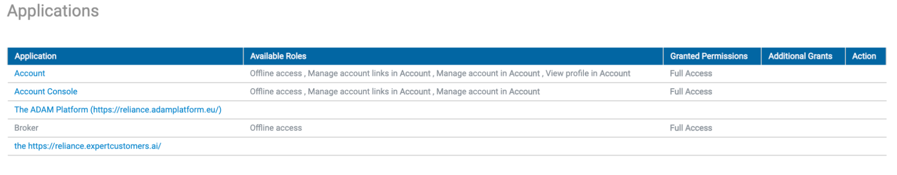
Figure XX Page showing applications accessed by a ROHub user
-
Log: This section shows all the available activity log for the user account in ROHub, including the date of the event, type of the event (i.e., login), IP source, application client used, and any additional information like the username and authentication method used.
-
Research Object
The ROHub users can access a research object either by the keyword search or from the explore page. The metadata of a specific research object in the ROHub platform can be categorised in various sections as described below.
-
Overview
The overview section of the research object displays the essential information/metadata and enables the manipulation of the research object. It consists the following subsections:
-
The main metadata includes the title, description, research areas, research object type, creation mode, creation date, last modification date, creator’s identity and relevant sketch associated with the research object.
-
Some especially relevant metadata elements might include the geospatial information associated with the research object that can be displayed in a map popup window, and the annotations added automatically by the semantic enrichment service.
-
The overview page also gives a summary of the contents encapsulated within the research object inspite of having a separate section for contents in the research object. The content subsection within the overview page shows the relevant contents and enables the user to navigate through them.
-
Within the overview page the Activity subsection summarizes the recent activity done on the research object. The user will be transferred to the main activity page within the research object on clicking the “View all” option.
-
The overview also contains the Lifecycle chart subsection where the evolution of the research object can be summarised for the user. From this subsection the user can navigate to the main lifecycle page of the research object on clicking “View all”.
-
The overview also contains the annotations added automatically to the research object by the semantic enrichment service. Selecting “Show All Annotations” at the end of the overview panel, drops down all the annotations added to the research object. Each annotation pops out in a separate window on clicking one of the annotations listed within the list. The user can also hide the annotation list on clicking the “Hide Annotations”.
-
On the right side of the overview page contains the various toolbars such as:
-
Summary of the RO including the number of views, downloads, resources, annotations, activity events, forks, snapshots/archives, as well as the RO quality score, and the research object size.
-
“AGENTS” subsection holds the usernames of the creator and the importer associated with the RO.
-
“QUALITY” shows the status of the quality of the RO in regard of its completeness.
-
“KEYWORDS” subsection holds the relevant keywords associated with the RO
-
“TOOLBOX” section allowing the user to download the research object, or its metadata; to get the research object atom feed that can be used to subscribe to the research object notifications; manage the research object evolution if the user is allowed (e.g., to create snapshots, archives, or fork the research object); manage the research object annotations if the user is allowed (e.g., to update the annotations from the semantic enrichment service, import an annotation body, or display the advanced annotation view
-
“SHARE” allows the user to share the
RO over
social media or by directly creating shareable link (function still not available)
-
“Cite As” subsection shows the citations used in the RO (if any)
The figure below depicts a basic overview page of a research object in the ROHub platform.

Figure XX Research Object overview page
-
Content
This section shows the aggregated resources in a research object where the user is enabled to browse and navigate through the resources. The resources can also include folders and subfolders. When the user selects a resource, its metadata information is displayed at the end of the page along with the annotations added in the ROHub platform for that particular resource. The Content page of a research object comprise of the following sections:
-
The navigation section lists the RO contents that shows metadata like the size or number of resources in a folder, creation time and date, creator identity etc.
-
The resource details section, which appears after the user selects (or clicks on) a resource in the navigation panel. It shows basic resource metadata e.g. title, resource type, number of contents in case of folder, URI (in case of a single resource element), creation date, modification date, author etc. Moreover on selecting a resource the content section shows actions on these resources from where the user is allowed certain actions like download, edition, deletion etc.
-
On selecting a single resource the user is allowed to see the available annotation list associated with the resource. On clicking the “Show Annotations” the user can see the annotations associated with that particular resource selected by the user.
The figures below give a better understanding of the content section of a research object.
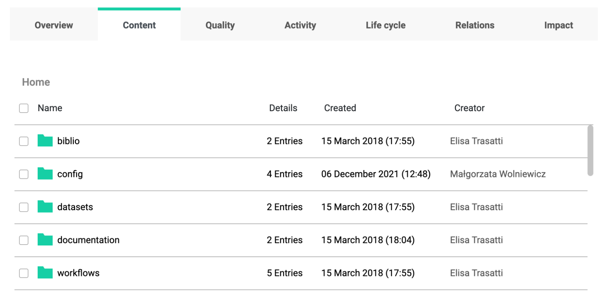
Figure XX Content navigation list

Figure XX Resource metadata and action bar in Content Section

Figure XX Resource metadata and annotations in Content
section
-
Quality (under construction)
This section of the RO will enable users to assess the quality of a research object according to some predefined quality criteria (e.g. completeness). This section interacts with the quality checklist service to showcase the desired results. Additionally, this section enables the RO monitoring tool to assess the RO quality through time. Presently this section is under construction.
-
Activity
This section is a specialisation of the main activity search page of the ROHub and only presents a list of notifications that were generated by the system regarding the activity done on the selected
RO only
(e.g., changes in the RO content, modification of resources, and their associated metadata, including comments) and quality (e.g., changes in the completeness, stability and reliability). The user can see the list containing the dates of creation of the activities, name of the activities as events and the user identity responsible for the activities. The user can sort the activities in a selected
RO by
date of creation (e.g. ascending or descending). There are filtering capabilities also present for the user to browse through the activities. Currently available filters allow searching for activities that have occurred in specific time or involve specific users or by specific objects. Moreover the annotations present for each RO activities can also be downloaded on clicking. The figure below shows the activity section of the RO selected.
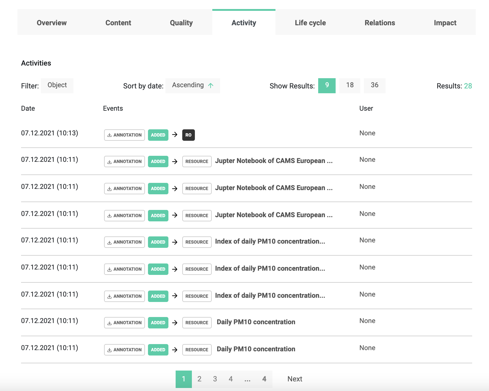
Figure xx Activity section of a Research Object
-
Lifecycle
This section displays the RO evolution, including the snapshots, forks, and on completion the archive (release) generated for the RO throughout the whole evolution time. The lifecycle chart provides a graphical representation of the related RO for live/snapshots/forks/archive and also the subsequent list of events of the RO over the period of timeline. The user also can navigate to the RO activity page from this section. The figure below depicts the life cycle section of a selected research object.

Figure XX RO Lifecycle section
-
Relations
This section of the ROHub portal visualises the semantic relations between two resources. This section is intended for advanced users. The users can see the relations between the resources where the first one must be the selected research object or an aggregated resource, while the second could also be an external resource. The figure below depicts a visualised relationship between two resources in the ROHub platform.

Figure XX RO relations section
-
Impact (under construction)
Though this section of the RO is under construction This section presently has two sections. The first section presents a graph of the number of activities through a time period of one year and the second section presents the statistics related to research object impact, including the number of views, downloads, forks and number of activities through a time period of a month.

Figure XX Impact of the research object
-
My ROs
This section in the ROHub platform enables an authenticated user to create a research object directly from the user interface of the portal. When a user signs into the portal and on clicking the “My ROs” from the top menu bar gets into the page where he can create new research objects from scratch, see his own created ROs as well as the ROs he is allowed to edit in the platform. The entry page in the My ROs section is shown in the figure below.
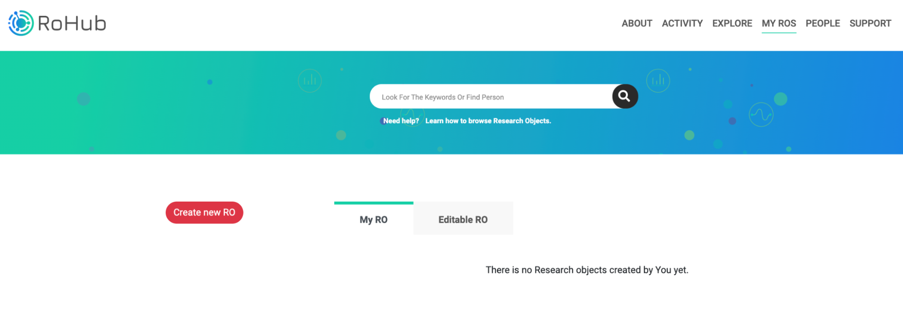
Figure XX Entry page of the My ROs section
The user can create a research object on clicking the “Create new RO” from the “My ROs” page. On clicking the user is transferred to a form where the user can enter the contents and metadata of the research object to be created. On clicking “Create and Continue” this page allows the user to navigate through other forms to add the various relevant data in order to enrich the research objects such as:
-
“Basic information” form allows the user to add the key information such as title, description, access mode, editor and owner identities, research areas related to the RO and the type of RO.
-
“Authors & contributors” form allows the user to add identity information about the authors and contributors.
-
The form named “
tags
” adds r
elevant tags and related keywords to be used in the research object.
-
“Sketches gallery” for uploading sketches related to the research object.
-
“Resources” allows the user to add folders and subfolders and add specific types of resources for the research object.
-
The user can also upload specific geolocations (e.g. GeoJSON files) as per relevance of the research object through the form named “Related locations”.
-
“License & Funding” form allows the creator to add licences and funding information used in the reach object.
-
There is another form called “
Other metadata
” page where additional metadata could be added in the research object
At the bottom of the first form page the user can also exit from the process of RO creation on clicking “Create and Exit” and come back again to populate the other forms, also there is the possibility of resetting the form on clicking the “Reset form.” The figure below shows the main page and the forms for creating research objects in the ROHub platform.
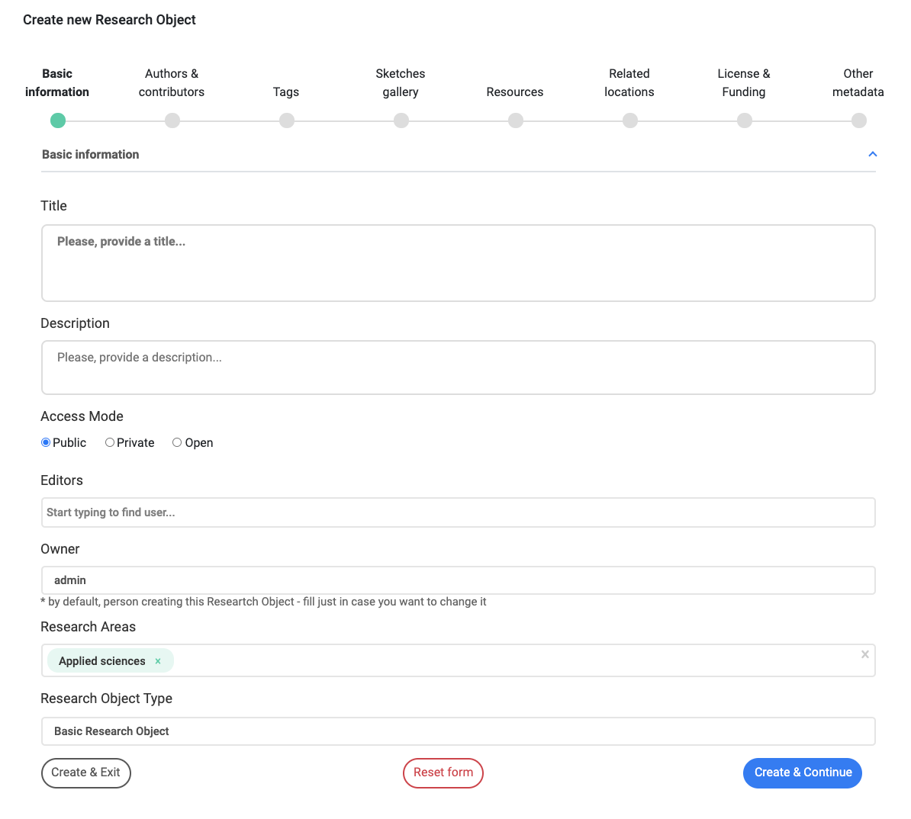
Figure xx RO creation via ROHub
-
Explore
The Explore page can be accessed by the user on clicking “EXPLORE” from the topmost menubar of the ROHub platform. This section enables the user to browse and navigate the research objects collection by organising them according to their semantic properties and allowing users to discover the objects by applying multiple search filters. By default the explore page lists all the available ROs, the user can sort them according to ascending/descending data of creation. The number of ROs in one page can be changed too from the explore page for the user. From the explore page the user can browse/search ROs in the following ways:
-
Faceted search results view where the user can search for keyword specific research objects from the keyword serah box present at the top of the explore page. This fetches the list of research objects according to the keywords used for the search. The view is made by default in list view and another option of image icon (wherever available) for each RO is available. In both cases the same information about ROs is presented. Each research object in the list contains the key metadata like title, description, RO type, research areas, creation date and time etc. as depicted in the figure below. On clicking the “read more” the user can enter into the research object with its respective sections as described in section 2.3.
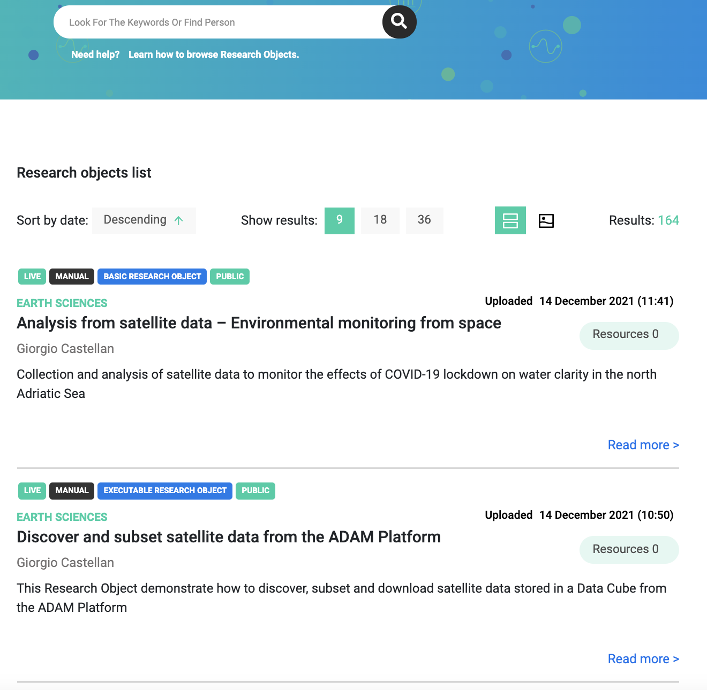
Figure XX Faceted search results of ROs
-
Filter search allows the user to further filter the results of the fetched ROs according to various criteria. The figure below shows the filter section present in the left side of the explore page. On cycling the green drop-down icon the user can select the options from each filter section and also can reset all the filters from this section.
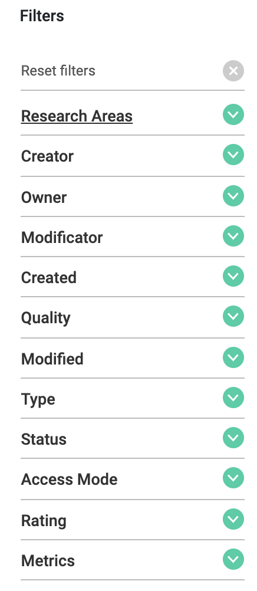
Figure XX Filter section of the explore page
Each filter section has various options to choose so that the user can filter through the most desired results of the research object. The subsections and their figures are as follows:
-
Research Areas: In the filter the user can select the from a vast range of research areas (broadly in applied sciences, earth sciences, life sciences, physical sciences and space science) available in the ROhub platform to fetch the results from those specific research areas.
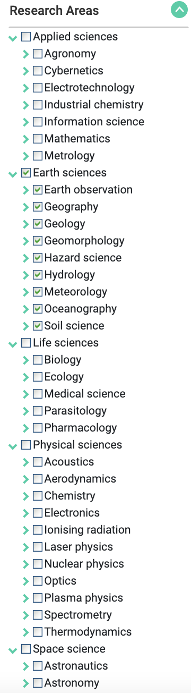
Figure XX Research area filter options
-
Creator: The ROHub platform allows the user to filter the research objects from the platform based on the identity of the creators. The user can provide the names of single or multiple creators (from the signed up users of ROHub) to see the results of the research objects created by them.
-
Owner: On providing the names of owner/s the user can filter the research objects based on the information provided.
-
Modifictors: Similarly the user can filter the ROs based on the information of the modificators.
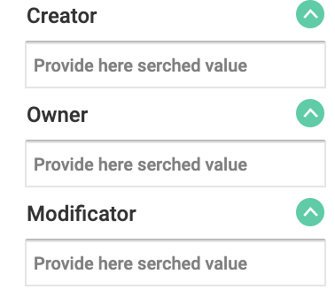
Figure XX Filter options for Creator, Owner and Modificator
-
“
Created” filter allows the user to provide the range of creation dates so that the platform can fetch the ROs according to the dates of creation.

Figure XX Creation date filter
-
“Quality” filter fetches the ROs according to their quality as per completeness level.

Figure XX Filter for RO Quality
-
“Modified” allows the user to select and filter the ROs modified on a desired date range provided by the user.

Figure XX Modification date filter
-
The “Type” filter can be used to choose the relevant research object types available on the ROHub platform.

Figure XX RO type filter
-
“Status” filter is for filtering the research object based on their status (e.g. live, archived, forked or snapshot). Multiple filter criteria can be applied by the user to fetch the results.

Figure XX RO status filter
-
Through the “Access mode” filter the Public or private ROs can be selected by the user.

Figure XX RO Access mode filter
-
“Rating” filter allows the user to select the research objects from the range of ratings from <1 to >4.

Figure XX RO rating filter
-
“Metrics” is the filter for selecting research objects based on the quantitative values of its metadata elements like folders, resources, annotation, aggregations as well as other portal specific elements like number of views, downloads, likes, dislikes, snapshots, forks, archives and ratings.

Figure XX RO Metrics filter
-
Activity
The activity page can be accessed from the topmost menubar of the ROHUb portal. This section comprises the two sections:
-
Global Activity List is the one that summarises and presents all activities conducted by all users on all research objects available in ROHub. This list comprises mainly of the Date and time of the performed activity, activity event describing the type of activity (e.g. creation of a RO, addition of resources, addition of annotations etc.) and the name of the ROHub User who performed the activity (link of the userprofile page). Additionally in case of activities involving annotations the user can download the annotation simply by clicking on the icon “Annotations”.
-
Activity search filter is the section where the user can add criteria to find the list of specific activities passed through the filter by the user for searching through the activities, including the activity type and resource type, research area and username of the responsible creator.
The figures of the global activity list page and the filter view are provided below.
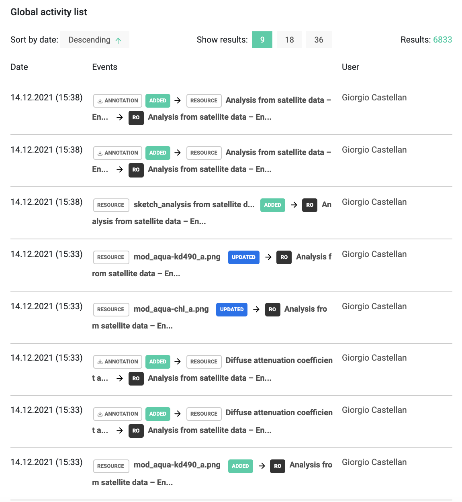
Figure XX Activity List
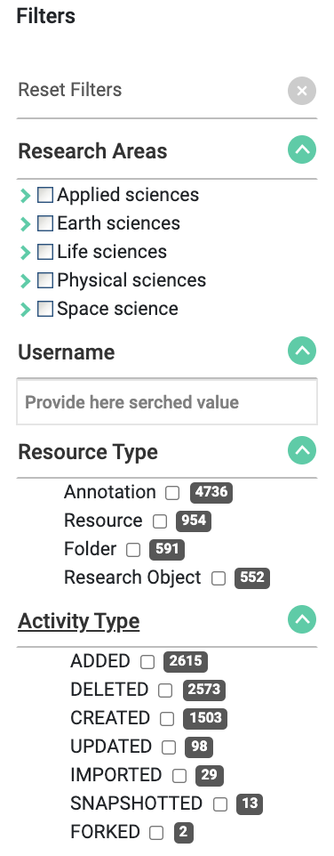
Figure XX Activity search filters list section
-
People
This section of the ROHub platform can be accessed from the main topmost menu bar located in the main landing page of the portal on clicking the “People”. Once a user is in this section three distinct subsections are visible. A search box for searching the ROHub users by name or surname, a taskbar with alphabets in order to browse the users alphabetically on clicking on each alphabets and finally the list of users fetched as per the search of the user. By default this list provides a global list of all the ROHub users. The subsections can be described as below:
-
The search box for ROHub users allows the users to search for any ROHub user simply by providing their name and/or surname and the results will be provided in the list below. From the list the user can navigate to the user profile of the specific user on clicking “Read more”.
-
The alphabetical browsing of the ROHub users allows users to navigate and fetch results of the users starting their names from A to Z. Once the user clicks on an alphabet, all the users with their names starting with that alphabet get listed from where the user profile of any user can be accessed to get more user specific information about the ROHub user.
-
By default the list of ROhub users contains all the available ROHub users registered in the portal. A user can sort the list alphabetically depending on the names. From the users list the user profile can be accessed by clicking “Read more” for more information about the users and their associated activities on the platform.
The figure below shows the people page of the ROHub platform showing the above-mentioned subsections.

Figure XX People search in ROhub
-
User profile
In the ROHub platform the “User profile” can be accessed from the “People” section on clicking the “Read more” available for a specific registered user. Inside the User profile we can find various subsections. On the left side panel the profile picture is available for the specific user (if available). Besides that there are few subsections, such as:
-
Overview section shows personal details of the user such as professional description, the user’s affiliation and research areas of the user.
-
Contact shows the email of the user and also the social media handles of the user if provided.
-
Research Objects is the section which shows the list of the ROs on which the user has performed some activity. If there is nothing to show this section will be simply empty.
The figure below shows a general overview of a user profile page.

Figure XX Overview of a User Profile
-
About
This section of the ROHub platform provides the user with the most basic information about the ROHub platform. The various sections of the about page can be navigated by the user from the left side panel of the “About” page. Each subsection opens a separate page once the user clicks on the sidebar options. The subsections are as follows:
-
What is ROHub?
: This page includes a short introduction to the ROHub and the technical components of the portal backend and their orchestration. Here the user can read and understand the basic working principles of ROHub in an easy way targeted for all categories of users.
-
What
is Research
Object?:
This page provides information about the basic idea behind the concept of Research Object and its implementation in the ROHub platform. This page provides the schematic diagrams of the workflows associated in a research environment and its aggregation as a research object.
-
Privacy Policy: This section allows the user to know about the data protection policies followed in the ROHub platform to protect the user and also to ensure that the user gets the most reliable content available.
-
Terms of service: This page explains the user and the stakeholders about the terms they should abide by while using the ROHub platform and its digital resources.
-
Some sections like the “News ” and “Showcase” ar still under construction
-
The publication sections show the information of the avail publication regarding ROhub in well known platforms or conferences.
-
The “Team” section holds the list of the current and the previous team members who worked on ROhub development.
-
There is a “Contact” section where the user can find the contact details such as email id and telephone for support and also the address of the affiliated institution.
The following figures show the various above-mentioned sections of the “About” page.

Figure XX ROHub details
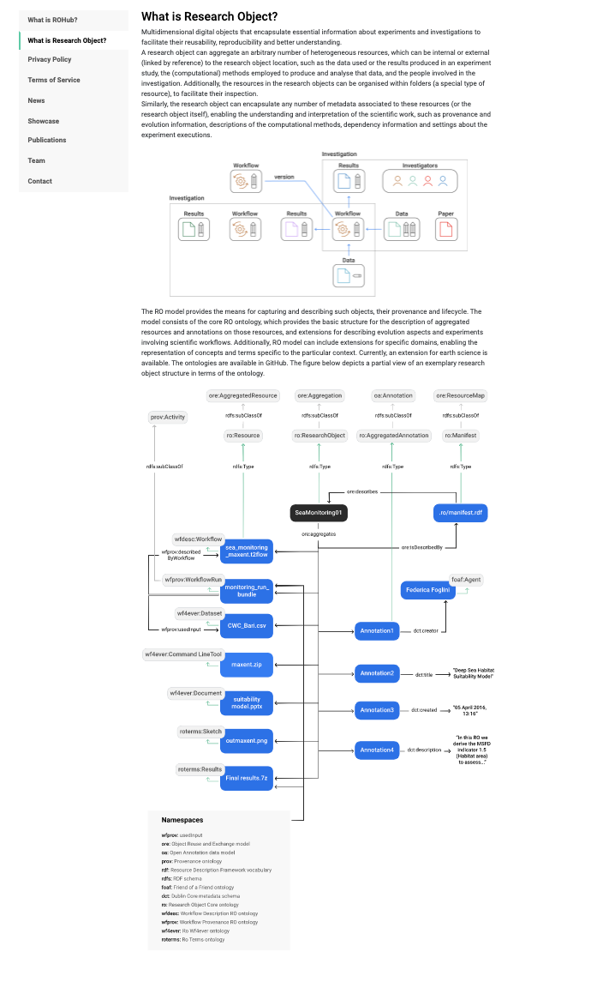
Figure XX Research object information

Figure XX Privacy policy of ROHub
Figure XX Terms and Services for ROHub users
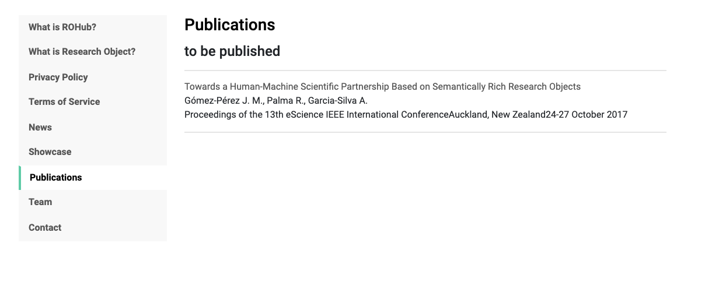
Figure XX Publications on ROHub platform
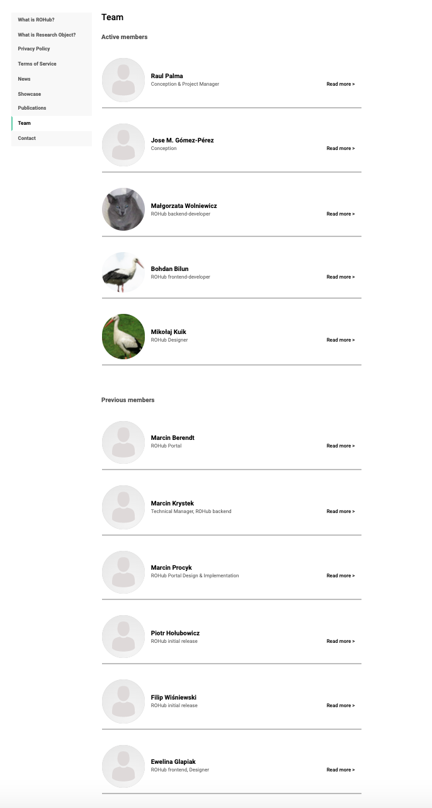
Figure XX Team of ROHub platform

Figure XX Contact details for ROHub support
-
Support
The support page can be accessed from the top menu bar as well as from the bottom of the ROhub landing page. In the support section the user can find the ROHub documentation and a brief summary of how to browse the research objects present in the platform. There will also be a frequently asked question section which is still under construction. The documentation of the ROHub is still to be updated and on completion the users can download it in pdf form from the support section. The figure below shows the support section of the ROHub platform.

Figure XX Support page of the ROHUb platform
-
ROHub Portal
sections
This section describes each of these components and provides a graphical depiction of its implementation in the portal.
-
Visual components for non-authenticated users
-
Basic search by keyword
This component enables to find research object by keywords (Figure 1), looking through all
the metadata annotations available, e.g., title, description, creator, etc.

Figure 1 Keyword search component
-
Featured research objects
This component presents the list of ROs that are promoted because of their quality (measured based on the RO compliance according to some specified criteria like completeness) or because of their popularity (e.g., golden exemplars) as depicted in Figure 2.
Figure 2 Featured research objects component
-
Recent activity
This component presents the latest three: ROs that were created, resourced added to research objects, snapshots and archives (Figure 3).
Figure 3 Recent activity component
-
Explore search (faceted)
This component enables users to browse and navigate the research objects collection organizing the objects according to their associated semantic properties and allowing users to discover the objects by applying multiple filters. This component comprises two subcomponents:
-
Faceted search results view: contains the results list view, which enables the visualization of the results in different formats. The view is made by default in list view and another option of image icon (wherever available) for each RO is available. In both cases the same information about ROs is presented.
Figure 4 Faceted search results view component
Figure 5 Faceted search filters list component
-
Activity search
The activity component summarizes and presents activities conducted by all the users on all research objects available in ROHub. The list view the user who performed the activity and on what kind of object model, also the research area and the type of activity are also available. This component comprises two sub-components:
-
Activity search results view (Figure 6): contains the resulting list of the activities found with the specified filters.
-
Activity search filter list (Figure 7): contains all filters for searching through the activities collection, including the activity and resource type, research area and responsible creator.
Figure 6 Activity search results view component
Figure 7 Activity search filters list component
-
People Search
Currently under construction.
-
About details
This component provides information about ROHub, including a short introduction to the system (What is ROHub? - Figure 9), to the research objects (What is Research Object?- figure 10, 11), Privacy policies (figure 12), news about or related to ROHub (under construction), showcases (under construction), publications, the ROHub team (Figure 13) and contact information.
Figure 9 About component - What is ROHub?
Figures 10 and 11 About component - What is Research Object?

Figure 12 About component- Privacy policy
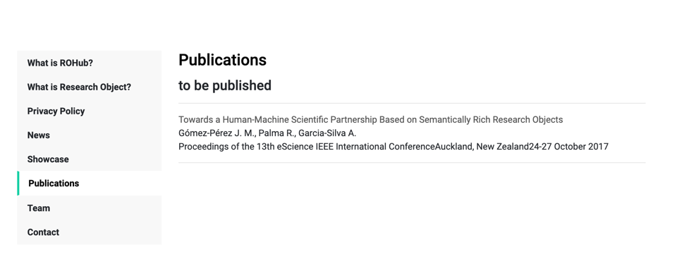
Figure 13 About component – Publications
Figure 14 About component – Team
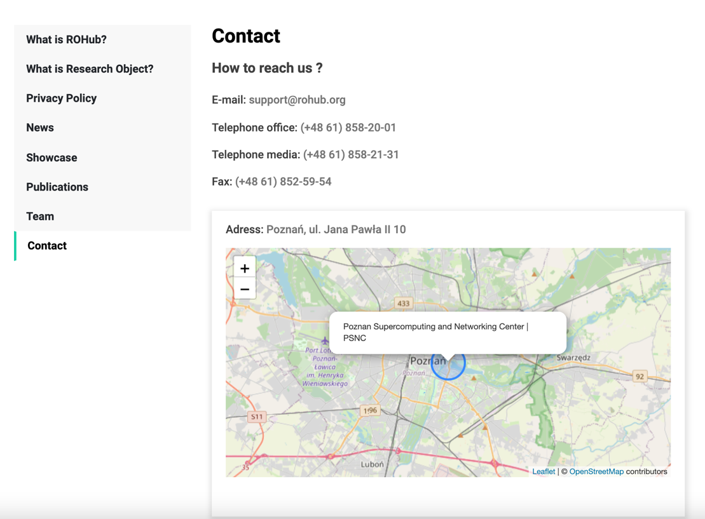
Figure 15 About component – Contact
-
RO manager
-
RO overview
This component displays the RO information/metadata and enables to manipulate the research object. It comprises two sections:
-
RO overview basic section: provides a summary of the RO information. This is the main entry point to the research object and consists of three sub-components:
-
Summary of the RO: including the number of views, downloads, resources, annotations, activity events, forks, snapshots/archives, as well as the RO quality score, and the research object size.
-
The main metadata including the title, description, research area, research object type, picture icon and others. Some especially relevant metadata elements might include the geospatial information associated to the research object that can be displayed in a map popup window, and the annotations added automatically by the semantic enrichment service. Moreover in the overview metadata the activity, lifecycle and content can also be viewed.
-
Various toolbars/information on the right side such
-
Agents: the usernames of the creator and the importer
-
Quality: the status of the quality of the RO
-
Keywords: the relevant keywords associated with the RO
-
Discovered metadata: the research areas of the RO extracted form the metadata.
-
Toolbox: action toolbar allowing the user to download the research object, or its metadata; to get the research object atom feed that can be used to subscribe to the research object notifications; manage the research object evolution if the user is allowed (e.g., to create snapshots, archives, or fork the research object); manage the research object annotations if the user is allowed (e.g., to update the annotations from the semantic enrichment service, import an annotation body, or display the advanced annotation view
-
Share: to share the RO over social media or by directly creating shareable link (function still not available)
-
Cite as: Citations used in the RO (if any)
-
RO advanced metadata view section: This section appears after selecting “show annotations at the end of the overview panel. It provides the complete list of metadata annotations related to the RO, in a view targeted for advanced users
Figure 16 RO overview basic view
Figure 17 RO advanced view
-
RO content
This component displays the RO aggregated resources, enabling browsing and navigation. When a resource is selected, its metadata information is displayed, including its URI for download.
It comprises three sections:
-
First, the navigation section for traversing the RO content (Figure 18) (e.g., size or number of resources in a folder, creation time, creator), as well as for performing actions on these resources if the user is allowed, such as download, edition, deletion etc
-
Second, the resource details section, which appears after the user selects (or click on) a resource in the navigation panel. It shows basic resource metadata: title, URI, creation date, author and others.
-
Third, the advanced metadata view section (Figure 17), which appears after selecting “show annotations” button in resource details panel. This component shows the complete list of metadata annotations related to the RO, in a view targeted for advanced users.
Figure 18 Resource navigation component
Figure 19 Resource details - basic annotations view component
Figure 20 Resource details - advanced annotations view component
-
RO quality
This component enables users to assess the RO quality according to some predefined quality criteria (e.g., completeness). This component interacts with the quality checklist
service to get the results. Additionally, this component enables to open the RO monitoring tool to assess the RO quality through time.
Figure 21 RO quality component
-
RO activity
This component is a specialization of the activity search component, presents a list of notifications that were generated by the system regarding the activity of the selected RO (e.g., changes in the RO content, modification of resources, and their associated metadata, including comments) and quality (e.g., changes in the completeness, stability and reliability). It is possible to narrow down the list of activities by applying filters. Currently available filters allow to search for activities that has occurred in specific time or involves specific users or by specific objects. The annotations for each RO can be also downloaded.

Figure 22 RO activity component
-
RO life cycle
This component displays the RO evolution , including the snapshots, forks, and if completed the archive (release), generated for the RO throughout time. It comprises two sections: the lifecycle chart on the left, and the changes panel on the right. The lifecycle chart provides a graphical representation of the related RO for live/snapshots/forks/archive/ . Once the user chooses “show changes on the chart” all the changes related to the RO is shown on the left side panel.
Figure 23 RO Life cycle component
-
RO relations
The component enables to visualize relations between two resources: the first one must be the selected research object or an aggregated resource, while the second could also be an external resource.
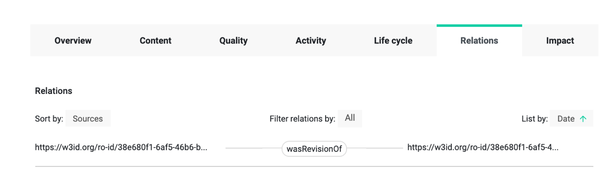
Figure 24 RO relations component
-
RO impact
This section presently has two sections:
-
The first section presents a graph of the number of activities through a time period of one year.
-
The second section presents the statistics related to research object impact, including the number of views, downloads, forks and number of activity through a time period of a month.
Figure 25 RO impact component
-
Sign-in and sign-up
(Under development )
-
Visual components for authenticated users
-
Social components
-
Comments (discussions)
-
Rating
-
Favourites
-
My Ros
-
Create RO
-
Delete RO
-
Import/Export RO bundle
-
RO manager
-
RO overview manager
-
RO evolution manager
-
RO content annotations update
-
Import annotations File (bulk update)
-
RO content manager
-
RO relations manager
-
RO access control
3. ROHub Portal user guide
3.1 How to search & discover research objects?
There are a few ways users can search & discover Ros. By keywords, by filtering their metadata by using the more advanced exploratory interface provided by the collaboration spheres.
-
Keyword-based search:
The user can find the keyword search component in the homepage, or at the top of every page in ROHub and type the keyword(s) the user is looking for. Thereafter the input keywords will be searched within all the available metadata annotations associated to the RO, e.g., title, description, creators, etc. This will also look inside the annotations created automatically by the RO enrichment service. The RO matching the keyword search criteria will be displayed in the Faceted Search Results also.
Figure xx Keyword-based search
-
Metadata-based search (faceted): The user has to go to the “Explore” page by selecting the options from the topmost menu bar as shown in the figure below.
Figure xx Faceted search in menu bar
In the faceted filters list the user can select the search criteria for searching/discovering the ROs. At present the criterion includes:
-
Editors: the name of the editors for a RO
-
Readers: The authenticated users who are the readers for a RO
-
Research areas: the research area associated to the RO
-
Created By: The name of the creator of the RO
-
Owner: the name of the person who owns the RO
-
Modified by: the name of the person who modified the RO
-
Identifier:
-
Title: search by specific title of a RO
-
Description: search by specific description of a RO
-
Publications: Search by any specific citation/publication associated with a RO
-
Sketch:
-
Geolocation: Search any RO for a specific geographical location associated with any RO.
-
Created On: the date of creation of the RO
-
Modified on: the date of modification of the RO
-
Quality: the minimum quality of the research object
-
Type: The type of the research object (e.g., workflow-centric, data-centric, etc.)
-
Status: The lifecycle state of the RO. At present only live ROs can be filtered.
-
Access mode: private (available to current user), public or open research objects
-
Rating: to search any RO according to a rating from 1-5.
-
Matrices: Number of resources including folders, annotations, downloads, views, snapshots, forks, achieves, ratings, likes, dislikes to the research object.
-
The results are displayed on the Faceted Search Results List, and the total number of results is displayed on the top left corner of this panel. Users can select the number of results to be displayed per page (9,18 or 36)
-
Users can switch between grid view or icon view to display results
-
Results can be sorted by date in ascending or descending order.
Figure xx Metadata based search (faceted)
3.2 How to search & inspect activity stream in ROHub?
-
The user need to go to the “Activity” page from the topmost menu bar.
Figure xx Activity search in menu bar
-
In the Activity Search Filters List the user can select the search criteria for searching and
-
filtering the activities. Available criteria include:
-
Username
: person associated to the notification event.
-
Resource type
: the resource type associated to the notification (e.g., research object, annotation, resource, folder etc.)
-
Activity type
: the type of activity reported by the notification (e.g., create, add, update, etc.)
-
Research area
: the research area of the research object associated to the notification
Figure xx Activity Search
3.3 How to inspect & visualize research objects?
A RO can be opened by the following ways:
-
Clicking “Read more>” in a research object from the Faceted Search Result List.
-
Clicking on the body of one of the Featured Research Objects from the home page
-
Clicking on “Read more>” of a research object from the recent activity panel in home page
-
Writing the research object URI in the Web Browser
Once a research object is being opened the user can see the overview page of the research object. The RO overview page will load and the user can do the following:
-
Visualize relevant research object indicators and quality, its key metadata associated with the RO.(More in section 3.3.1)
-
From the toolbox tab the user can:
-
Download the research object or its metadata in different formats
-
Subscribe to the notification feed generated by the research object
-
Import, update or view annotations into the research object.
-
Fork, snapshot or archive the RO evolution
-
Search, browse and visualize the research object resource contents (content tab)
-
Visualize & assess the research object quality (quality tab)
-
Search, browse and visualize the research object activity (activity tab)
-
Inspect & visualize the research object lifecycle (lifecycle tab)
-
Inspect & visualize the relations defined in the research object (relations tab)
-
Inspect & visualize the research object statistics (impact tab)
3.3.1 How to visualize & inspect the research object indicators and metadata?
-
First the user have to open the Research object overview tab.
-
On the first section in the right side the following indicators of the research object are displayed:
-
Research object rating, comments and likes
-
Number of views
-
Number of downloads
-
Number of resources aggregated
-
Number of annotations
-
Number of activity events
-
Number of research object forked
-
Number of snapshots and archives
-
Size of the research object in bytes, that is the physical space used by the research object
-
Below the indicators the following metadata element sections are displayed:
-
Agents: contains the names of the creator/importer/editor of the research object
-
Quality: The quality of the research object in percentage
-
Keywords: The relevant keywords associated with the research object.
-
Discovered metadata: The metadata extracted automatically from the research object content is displayed. These include:
-
Domains - fields of knowledge associated to the content, this can be one or more words.
-
Frequent expressions - frequent terms found in the content which can be one or more words
-
Places - named entities found denoting a place
-
People - named entities found denoting a person
-
Organization – named entities found denoting an organization
-
Toolbox: from this tab an user can:
-
Download the research object or its metadata in different formats
-
Subscribe to the notification feed generated by the research object
-
Import, update or view annotations into the research object.
-
Fork, snapshot or archive the RO evolution
-
Share: The option for sharing over social media (under development)
-
Cite as: This section displays the list of any citation for the research object if any.
-
On the left side of the overview page the following elements are displayed:
-
The metadata about the status, activity event, type of research object
-
Research area associated with the research object
-
DOI (if available)
-
Creation date and time
-
Title of the research object
-
Date and time of the last modification
-
Date and time of import (if any)
-
Description of the research object
-
Sketch of the research object If available
-
The next section drops down for geolocation (if available) associated with the research object e.g., place of the observation or investigation described
-
Below location is the section that displays the contents of resources on clicking the dropdown arrow on the right side of the section. (if available for a research object)
-
Next section shows the event of activities done on the research object (e.g. annotations added, name, date and time of the activity). The user will be redirected to the “activity page” on clicking the “view all” on the right side of this section.
-
Below the activity overview section is the lifecycle section which gives an overview of the lifecycle of the research object (e.g. creation data and time, creator’s name). The user will be redirected to the “Lifecycle page” on clicking the “view all” on the right side of this section.
-
At the bottom, the user can open the RO advanced annotation view panel by clicking the “show all annotations” bar. This panel displays all the annotations of the research object in a view targeted for advanced users. For each annotation, it is displayed, the property and the value of the annotation, as well as the date of creation and the creator’s name
Figure xx Volcano and Seismic source Modelling VSM – RO overview tab
Figure xx Volcano and Seismic source Modelling VSM – RO advanced annotation view
3.3.2 How to download the research object and/or its metadata?
-
Open the research object overview tab
-
Go to the RO toolbox on the right side of the panel.
-
Click the first icon of “Download”
-
Select “Metadata to download the research object metadata in RDF format (turtle)
-
Select “Zip” to download the whole research object as a zip file.
-
Select “PDF” to download the whole research object as a PDF file.
Figure xx RO toolbox - download the research object
3.3.3 How to subscribe to the research object notification feed?
(under development)
3.3.4 How to import annotations in the research object?
3.3.5 How to navigate & visualize the research object contents?
-
Open the research object content tab. This tab allows users to navigate and visualize the research object contents in a folder tree structure.
-
Initially the content tab displays all the resources (files, links, folders) at the root level
-
For each resource, the tree shows the resource information (e.g. number of entries for folders), in addition to the date and time of creation and the creator name.

Figure xx RO content tab (root level)
-
Clicking a folder displays its content (see Figure XX), allowing the user to navigate the content structure.
-
At the top of the folder tree there is a breadcrumb trail that reveals the user location in the content structure, and it can be used to return to the previous levels up to the root (home).
Figure xx RO content tab (first-level folder level)
-
On selecting the resource checkbox, displays its key metadata information including:
-
title of the resource
-
URI link of the resource for sharing
-
size in bytes of the resource
-
type of resource, such as workflow, process, dataset, paper, etc.
-
date of creation, i.e., the date the resource was aggregated in the research object
-
creator, i.e., the name of the person aggregating the resource
-
description of the resource
-
image associated to the resource
-
number or annotations associated to the resource
-
Clicking the “show the annotations” button displays the detailed view of all the annotations associated to the resource. For each annotation the property and the value of the annotation, as well as the date of creation and the creator name is displayed.
Figure xx RO content tab (content and resource annotations view)